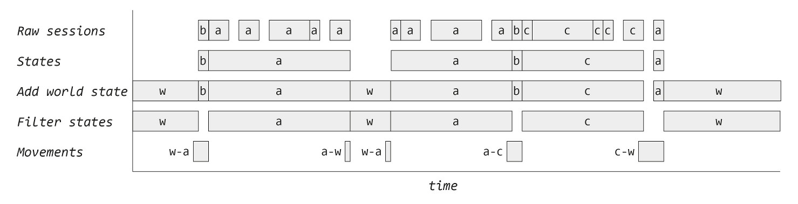
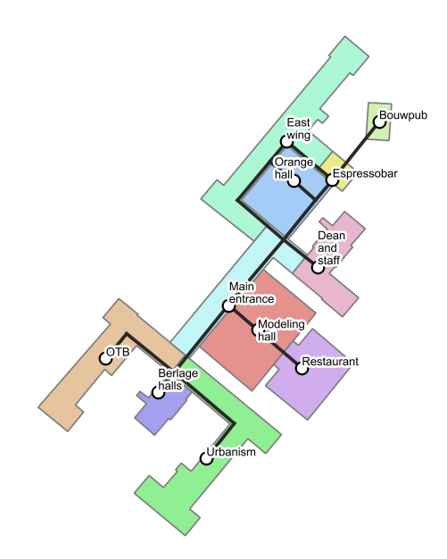

Methodology
Contents
Methodology
In this section the data mining methods used to retrieve movement patterns from the Wi-Fi log at two different spatial levels will be described. Figure 1 gives an overview of the main workflow, starting with the TU Delft eduroam Wi-Fi log and ending with movement patterns. The two spatial levels for which movement patterns will be derived are ’building’ and ’building-part’ level. The movement patterns on building level concern the movement from, to and between the buildings on the campus. The movement patterns on building-part level concern the movement from, to and between building-parts of the faculty of Architecture and the Built Environment. First subsection Mobile device extraction will describe the extraction of mobile devices. The reason that mobile devices are extracted is that the records of mobile devices (e.g. smart phones) are more complete and representative for the actual movement of the corresponding person then records of static devices (e.g. laptops). Subsection Preprocessing raw Wi-Fi log sessions will describe how the raw data of the Wi-Fi log is preprocessed to retrieve clean sessions for both building and building-part level. A session is defined as time interval during which a device is connected to one access point (AP). In subsection State extraction it will be explained how states are created by grouping subsequent sessions that share the same location. A state is defined as a time interval during which a device is located in a certain building or building-part. A key part in the process of state extraction is the creation of a ’world’ state which allows the detection of movement from and to campus. Subsection Movement extraction addresses how the resulting states are used to retrieve movements at both spatial levels. A movement is defined by the change from one state to the next subsequent state, where the different states must be at a different locations. Finally subsecton Movement pattern extraction describes how the movements are used to derive and visualize movement patterns.

Figure 1: Workflow
Mobile device extraction
The Wi-Fi log contains data of different device types, as any device that makes a connection to eduroam will be stored in the log. A distinction can be made between mobile and static devices. Mobile devices, such as smart phones, are usually switched on during the entire day and are usually carried by the user. Static devices, such as laptops, are mostly only switched on during particular periods when a person is stationary for a longer period of time. Furthermore, they are likely to be left by the user for certain time periods. Therefore, the tracking of mobile devices gives more accurate information about the patterns of users than the tracking of static devices. As a result a distinction should be made between the two device types, so that static devices can be filtered out. This distinction can be made based on the knowledge that mobile device are more likely to have very short sessions in the log as they continuously connect to new APs when a person moves around. As a result the mobility of a device can be defined by the ratio between the amount of short, 5 minute, sessions in the Wi-Fi log and the total amount of sessions in the Wi-Fi log.
Figure 2 shows a histogram of the mobility ratio of all devices. The two distinctive peaks corresponding to the static and mobile devices can clearly be identified. The mobility ration of all devices is stored in a separate table, enabling filtering out of static devices at any point during the process.

Figure 2: Histogram of mobility ratio of all devices in the Wi-Fi log.
Preprocessing raw Wi-Fi log sessions
For each session in the Wi-Fi log the name of the access point is stored. By linking this name to a location the data becomes valuable for detecting movement patterns. For some APs however the location is unknown, these are filtered out. The other records are related to a location, both on building and on building-part level. For building level the location can easily be retrieved as the building ID is part of the AP name. These IDs are linked to the corresponding building polygons of a topographical map. The location of each building is the center point of these polygons. For the Faculty of Architecture and the Built Environment the floor plan with the locations of the different APs is available. Building-parts ( see ) are defined based on the layout of the APs. Each building-part contains several APs and the relation between them is stored in the database. In this way the AP name can directly be linked to a location.
State extraction
To create states, subsequent sessions at the same location are grouped together. As the location is known for each session on both building and building-part level, states can be created for both spatial levels. illustrates how sessions are grouped to create states. For grouping, a time threshold of one hour is used, meaning that subsequent sessions between which the time gap is less than one hour are grouped together. The reason for the one hour threshold is that gaps smaller than an hour are likely to represent a person that was just smoking or lunching outside for a short period of disconnection. If a person is not recorded for more than an hour it is more likely that the person has left the campus. To be able to retrieve this movement away from and back to the campus, ’world’ states are added to the data during a time period where the person has not been recorded for more than one hour (see ). Finally, states are present in the data that do not represent real visits, but only people passing by a building. These short states are filtered out (see Fig. 3).

Figure 3: Processing steps; from raw data to movements.
Movement extraction
The extracted states contain implicit information on the movement of the device. If a device is first located at location A and subsequently at location B it must have moved from location A to B. However, in order to be able to retrieve movement patterns, the movement should be stored explicitly. The origin and destination of the movement are defined by the locations of both states. The timing of the movement is derived by taking the end time of each state minus 5 minutes and the start time of the subsequent state (see Fig. 3). The reason for the 5 minute subtraction, is that the last moment a device is actually recorded is 5 minutes before the end time of a state.
Movement pattern extraction
The final step is to extract movement patterns from the created movements. These patterns can be derived by counting the amount of movement from, to or between certain buildings and building-parts for different time intervals. To determine if a movement should be counted for a particular time interval, it is checked whether the time between start and end falls within the interval. In this way each movement can only be counted ones when comparing adjacent intervals. The amount movement is both visualized in time profiles and maps with specified time intervals. To visualize the indoor movement on a map, a network graph of the underlying building floor plan is created for the Faculty of Architecture and the Built Environment. For building level, no graph is created as the movement in outdoor space is less constrained, especially considering the spacious character of the TU Delft campus. To determine the route taken from one building-part to another the shortest path is taken using the Dijkstra algorithm.

Figure 4: Building parts on the ground floor of the Faculty of Architecture and the built environment and its underlying graph.